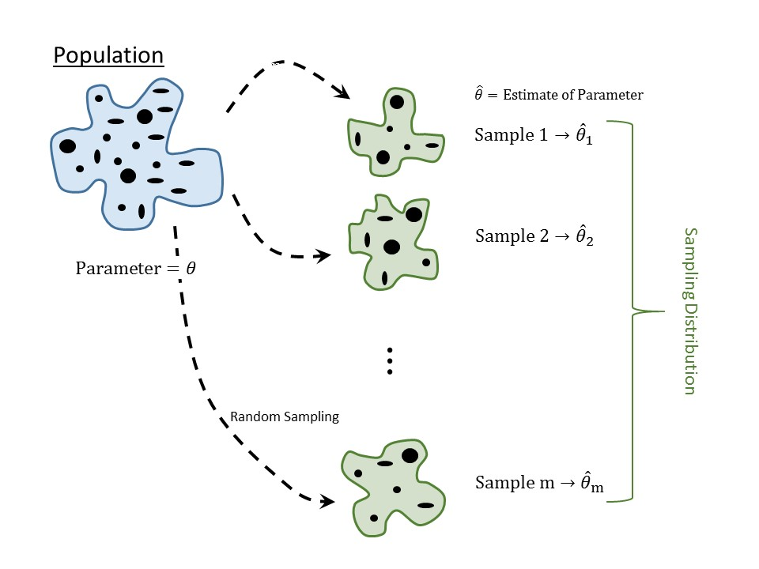

6 Assessing the Evidence (Quantifying the Variability in Estimates)
Again, the goal of statistical inference is to use the sample as a snapshot of the underlying population (Figure 1.2). There are generally three reasons people distrust this process:
- Fear that the sample does not represent what is going on in the population.
- Fear that we cannot make a conclusion with a sample of size \(n\) (wanting more data).
- Fear that one study is not enough to make a conclusion.
We have already tackled the first fear in Chapter 4; if we are to trust statistical results, we must collect data that is representative of the underlying population. The second and third fears above are tied together, though maybe not obviously. Before launching into a slightly more formal discussion, consider the following thought experiment.
Example 6.1 (Free Throws) Your friend Dave lives for his Wednesday “pick-up” basketball games at the gym. One afternoon, while waiting for a few more players to arrive Dave shoots 10 free throws, of which he makes 3.
While Dave only exhibited a 30% success rate from the free throw line in this sample, we imagine no one is ready to claim definitively that Dave has a 30% success rate from the free throw line overall. So, what can we say? Well, if this set of 10 free throws is representative of Dave’s free throw performance, then we would say that 30% is an estimate for his success rate; that is, the statistic 30% is a good guess at the unknown parameter (overall success rate). There are two ways we might improve our “trust” in this estimate. First, we might consider a larger sample size (make Dave shoot more free throws); let’s continue along these lines for a moment.
Example 6.2 (Free Throws (Cont.)) Joe has also been waiting for a few more players to arrive; however, Joe shoots 100 free throws (clearly he has more time on his hands) of which he makes 30.
Again, we probably wouldn’t claim definitively that Joe has a 30% success rate from the free throw line overall. And again, assuming this set of 100 free throws is representative of his overall performance, we would say 30% is an estimate for his success rate. But, we might also say we have more “trust” in our guess for Joe’s overall performance compared with our guess for Dave’s. The more shots we observe, the more we seem to “trust” our estimate. This idea is known as the Law of Large Numbers.
Definition 6.1 (Law of Large Numbers) For our purposes, the Law of Large Numbers essentially says that as a sample size gets infinitely large, a statistic will become arbitrarily close (extremely good approximation) of the parameter it estimates.
There are two drawbacks with the Law of Large Numbers. First, it does not tell us how “close” a statistic is to the parameter for any specific sample size; second, we cannot take an infinitely large sample. For our thought experiment, it is probably not feasible to have Dave or Joe shoot thousands of free throws, for example. Our goal then becomes to somehow quantify the “trust” we have in our estimates given the sample size we have available. That is, given that we only saw Dave shoot 10 free throws, can we quantify our “trust” in that 30% estimate of his free throw success? We need some way of measuring “trust,” and we do that through a notion of statistical “confidence.”
Big Idea
In statistics, our “trust” is tied to the estimate’s repeatability; we ask the question “if we were to repeat the study, how much would we expect our estimate to change?”
We will formalize the notion of statistical confidence shortly, but for now, linking our trust in an estimate to its repeatability gets at the last fear. We know that if we repeat a study, the results will change; our job is to quantify (keeping the sample size in mind) the degree to which the results will change. That is, we need to quantify the variability in the estimate across repeated studies (known as sampling variability; we told you statistics was all about variability). This is characterized by the sampling distribution.
Definition 6.2 (Sampling Distribution) The distribution of a statistic across repeated samples (of the same size) from the population.
This is perhaps the most important of the Distributional Quartet; it is the holy grail of statistical inference. Once we have the sampling distribution, inference is straight-forward.
Fundamental Idea IV
Variability is inherent in any process, and as a result, our estimates are subject to sampling variability. However, these estimates often vary across samples in a predictable way; that is, they have a distribution that can be modeled.
6.1 Conceptualizing the Sampling Distribution
The sampling distribution of a statistic is one of the most fundamental, and yet one of the most abstract, concepts in statistics. Its name is even confusing; the “distribution of the sample” (Definition 5.6) and the “sampling distribution” (Definition 6.2) use similar words but represent two different things. Before we discuss the utility of the sampling distribution, we first focus on making it a bit more tangible.
For the Deepwater Horizon Case Study discussed in Chapter 2, consider the following question:
What proportion of volunteers assigned to clean wildlife develop adverse respiratory symptoms?
In the sample, we observed 15 out of 54 such volunteers (27.8% or a proportion of 0.278). This proportion is a good estimate of the rate of adverse symptoms in the population (assuming the sample is representative, of course).
Now, imagine randomly selecting 54 new volunteers from the population (repeating the study). For this new sample, it would be possible to determine the fraction of volunteers that experienced adverse symptoms; we would expect this value to be a bit different than what we obtained in the first sample since the two samples consist of different subjects. Since this second sample is also representative, however, it also provides a good estimate of the parameter. That is, we now have two good estimates of the same parameter.
Now, we could take a third random sample of 54 volunteers and compute the fraction in this third sample which experienced adverse symptoms. This third sample also provides a good (and potentially unique) estimate of the parameter. In fact, we could continue this process \(m\) times, for some large number \(m\), as illustrated in Figure 6.1).
Consider what we are describing. With each representative sample, we have constructed an estimate of the parameter. What we have kept from each replicate sample is not the values of the variables themselves (whether the volunteers experienced adverse respiratory symptoms); instead, we have retained the statistic from each of \(m\) completely different studies. So, which of these \(m\) estimates do we trust? All of them. Since each sample is representative of the population, each estimate is a good (not perfect) estimate of the parameter. Since we have all these estimates, we should think about what information they provide. In fact, there is information not only in what these estimates are but in how different they are from one another. Describing the way in which these estimates change from one sample to another is the sampling distribution.
Notice that the sampling distribution is not describing a variable from our study; it is describing a statistic. In order to construct a sampling distribution, we go through the following steps:
- Take a sample; record variables of interest.
- Compute the statistic which estimates the parameter and retain this value.
- Repeat steps 1 and 2 a large number of times.
- Examine the statistics collected.
So, the sampling distribution is not a plot of the raw values of a variable on individual subjects but a plot of statistics which summarize entire samples. That is, the unit of observation has changed in this distribution. While a sample consists of individual subjects from the population, the sampling distribution consists of individual samples from the population.
Big Idea
Re-read the description of a sampling distribution several times, and return to it often as you read through the text. It takes a while for this to sink in, but if you truly grasp this one concept, the remainder of statistical inference becomes much more accessible.
6.2 Example of a Sampling Distribution
Since this idea is so critical to grasping statistical inference, we are going to walk through the process of generating a sampling distribution for a known data generating process.
Example 6.3 (Dice Experiment) Consider an ordinary six-sided die; we are interested in the proportion of times that rolling the die will result in a 1. Putting this in the language of the statistics, we have the following:
- The population of interest is all rolls of the die. Notice that this population is infinitely large as we could roll the die forever.
- The variable is the resulting value from the roll. Since this can take on only one of six values, this is a categorical variable.
- The parameter of interest is the proportion of rolls that result in a 1.
Our goal is to construct the sampling distribution of the sample proportion of rolls that result in a 1 when the die is rolled 20 times.
What makes this example unique is that we know the value of the parameter. Because of the physical properties of a die, we know that the probability a roll results in a 1 is \(\theta = 1/6\). So, statistical inference is not needed here. This example simply provides a vehicle for studying sampling distributions. Also, before going on, notice that the sampling distribution is for the statistic (the sample proportion) and not the parameter; and, it is constructed for a fixed sample size (in this case, \(n = 20\) rolls). Going back to the steps for creating a sampling distribution described in the previous section, we have the following steps:
- Roll a die 20 times, each time recording the resulting value.
- Compute the proportion of times (out of the 20) the resulting value was a 1 and retain this value.
- Repeat steps 1 and 2 a large number of times (let’s say 500).
- Plot the resulting values; there should be 500 proportions that we are keeping.
Notice that we are actually rolling a die 10000 times (20 rolls repeated 500 times); we only keep 500 values (one proportion for each set of 20 rolls). This is something you could physically do at home. For example, the first sample might look like that in Figure 6.2.

For this particular sample, the proportion in the sample (our statistic of interest) would be 0.25 (\(5/20\)). That is the statistic we would record. We then repeat this 499 more times. You could try a few out yourself using an online simulator. Figure 6.3 shows the resulting proportions for when we simulated this process with 500 samples, each sample consisting of 20 rolls.
With modern computing power, there is no need to restrain ourselves to repeating the study 500 times. A simple computer program could replicate rolling the study (20 rolls of a die) thousands of times. Figure 6.4 is the sampling distribution for the proportion of rolls that result in a 1 based on a sample of size 20, repeating the study 50000 times.
Warning
When looking at a graphical representation of a sampling distribution (such as Figure 6.4), there is a tendency to describe the “data” in the graphic. However, the use of the word “data” here is inappropriate. We restrict the word “data” to refer to information/measurements observed on each subject; this includes numeric and categorical variables directly measured and any transformations of these variables.
For example, the total number of credit hours a student has completed is part of the data observed (quantitative variable). Similarly, using the total number of credit hours to determine class standing (Freshman, Sophomore, Junior, Senior) would also be a part of the data observed (categorical variable).
However, the word “data” should not be used to describe the statistics computed from the sample, or from repeated sampling such as when constructing a sampling distribution, as these quantities are not characterizing the individual units under study.
Notice that the sampling distribution is centered around the true value of the parameter (\(\theta = 1/6\)). In general, the sampling distribution of a statistic, when taken from a random sample, is centered on the true value of the parameter. This is the unbiased nature of the data coming out; random samples are representative of the population. Similarly, note that while no one sample (remember, each value in the distribution represents a statistic from a sample of 20 values) is perfect, none of the samples produced a statistic which is really far from the true parameter. That is, a representative sample may not be perfect, but it will give a reasonable estimate of the parameter. Notice that these properties hold even though we had a relatively small sample size (only rolling the die \(n = 20\) times).
Big Idea
The size of the sample is not as important as whether it is representative. A small representative sample is better for making inference than a large sample which is biased.
One of the most useful things about the sampling distribution is that it gives us an idea of how much we might expect our statistic to change from one sample to another. Based on Figure 6.4, we could say that if we roll a die 20 times, the proportion of rolls which result in a 1 is most likely to be between 0.05 and 0.30 (so somewhere between 1 and 6 ones out of the 20 rolls). It would be extremely rare to have 12 of the 20 rolls result in a 1 (notice how small the bar is for a proportion of 0.6). The sampling distribution is therefore giving us an idea of the variability in our statistic.
Remember, our goal was to account for the variability in the statistic (how much it changes from one sample to another) while accounting for the sample size. How is this done? When forming the sampling distribution, we repeated the study, which included ensuring that for each replication, we obtained a new sample that had the same size as the original sample. So, the sample size is baked into the sampling distribution. To see the impact of taking a larger sample, consider rolling a six-sided die 60 times instead of 20 times. When we build the sampling distribution, each replication will then involve repeating the process with 60 new rolls. Figure 6.5 shows the sampling distribution of the proportion of 60 rolls which result in a 1, using 50000 replications. Notice that the distribution is still centered on the true parameter \(\theta = 1/6\). The primary difference between this figure and the last is that when we increased the sample size, the sampling distribution narrowed.
We all have this intuition that “more data is better.” In truth, we should say “more good data is better” since we understand that having a representative sample is extremely important. With that in mind, the distinction between Figures 6.4 and 6.5 illustrate what we really mean when we say “better” — the statistic is less variable. We have to be careful here. We are not saying that the sample has less variability; we are saying the statistic has less variability. That is, we do not expect our estimate to change as much from one sample to the next. From Figure 6.5, we have that if we roll the die 60 times, we expect the proportion of 1’s to be somewhere between 0.1 and 0.25 (somewhere between 6 and 15 ones out of the 60 show up). The proportion is varying much less from one sample to the next compared to when we rolled the die only 20 times.
Big Idea
Larger samples result in statistics which are less variable. That is, as the sample size increases, the sampling distribution of a statistic becomes narrower.
Note
Students often believe that a large sample reduces the variability in the data. That is not true; a large sample reduces the variability in the statistic.
Warning
We repeat a warning here that we stated when introducing the concept of bias. There is a difference between accuracy and precision. Generally, accuracy refers to location (and therefore bias); we say an estimate is accurate when it is unbiased. Precision refers to the variability; we say an estimate is more precise when it has less variability. With regard to sampling distributions, accuracy refers to the center of the sampling distribution while precision refers to its spread.
We have briefly discussed the center and spread of the sampling distribution we constructed above. Before leaving this section, a note on the shape of the sampling distribution is also in order. Note that for this example, the resulting observations can take on one of only two values (heads or tails). A bar chart summarizing this distribution (that of the variable within the population) would consist of only two bars. However, the distribution of the statistic that we record (that is, the sampling distribution) is bell-shaped (fig-samplingdistns-dice-histogram2). While the sampling distribution will not always be bell-shaped, it is often the case for the statistics discussed in this text. The key thing to recognize is that the distribution of the variable and the distribution of the statistic are not the same.
6.3 Modeling the Sampling Distribution
Let’s return to the Deepwater Horizon Case Study. In particular, suppose we are trying to address the following question:
What proportion of volunteers assigned to clean wildlife develop adverse respiratory symptoms?
We have an estimate for this proportion (\(\widehat{p} = 0.278\)) based on the observed sample. Based on the discussion in the previous section, we know the sampling distribution of this proportion can help us quantify the variability in the estimate. Figure 6.6 represents the sampling distribution of this proportion. From the graphic, we would not expect the proportion of volunteers who experience adverse respiratory symptoms to move much beyond 0.15 and 0.4 if we were to repeat the study; it would almost certainly not move beyond 0.1 and 0.5 if we were to repeat the study.
Now, you might ask “wait, where did this sampling distribution come from? There is no way you actually repeated the study 50000 times, right?” And, you would be right.
In the previous section, we described building the sampling distribution through repeated sampling. In practice, this is never practical. Generally, cost is the limiting factor when collecting data; as a result, we get a single sample to work with. We have essentially argued that the sampling distribution is critical to making inference, but we cannot take multiple samples to make it. Where does that leave us? The answer…modeling. Our goal is to construct a model of the sampling distribution that we can use to make inference.
There are three general techniques for modeling the sampling distribution of a statistic:
- Build an empirical model.
- Build an exact analytical model using results from probability theory.
- Build an approximate analytical model using results from theorems about limits in probability.
We will focus on the first approach; the latter two approaches are discussed in Appendix A. Our emphasis in this chapter is on the conceptual understanding of a sampling distribution and its model. While these latter two approaches differ in their technique, the use of the resulting model is the same. We choose to focus on the first approach because it requires less mathematical background and reinforces the conceptual understanding of a sampling distribution discussed above. The idea in constructing an empirical model is to mimic the discussion above regarding the construction of a sampling distribution. Our description references Figure 6.7 often.
We are limited by our resources; because of time and money constraints, we cannot resample from the population (crossed off resamples in Figure 6.7). So, we pretend for a moment that our original sample (colored in green in Figure 6.7) is the population. Our idea is to randomly sample from this original data, creating a resample (colored in orange in Figure 6.7). Forgive the non-technical terms here, but since the orange “blob” is a random sample from the green “blob,” then it is representative of the green blob. Therefore, if we construct an estimate \(\widehat{\theta}^*\) from the orange blob (the star denotes a statistic from a resample), then it should be close to the statistic \(\widehat{\theta}\) from the green blob; but, since this green blob is representative of the population, \(\widehat{\theta}\) should be a good estimate of \(\theta\). Therefore, we have that
\[ \widehat{\theta}^* \approx \widehat{\theta} \approx \theta \Rightarrow \widehat{\theta}^* \approx \theta \]
That is, each resample produces a statistic which is a good estimate of the parameter from the underlying population. The benefit here is that the resamples are taken from the original sample, not the population, and can therefore be constructed in the computer. And, given today’s computing power, we are not limited by time or money (10000 resamples can often be taken in a matter of seconds). If you want to see this process in action, we encourage you to check out the free online app located at http://www.lock5stat.com/StatKey/bootstrap_1_cat/bootstrap_1_cat.html.

Again, the idea is to mimic in the computer the resampling that we were unable to do in real life. This process is known as bootstrapping.
Definition 6.3 (Bootstrapping) A method of modeling the sampling distribution by repeatedly resampling from the original data.
There are actually several variations of bootstrapping; however, for our purposes currently, we can keep the following details regarding the implementation in mind:
- Each resample (known as a bootstrap resample) is the same size as the original sample.
- Each resample is taken with replacement; that means the values from the original sample can show up multiple times. Think of “catch and release” fishing.
- Typically, between 3000 and 10000 bootstrap resamples are taken.
We will avoid actual computation throughout the text, but a quick online search would provide several resources for implementing the process we have described (and its many variants) in various computer programming languages and software packages.
Big Idea
Students often believe that bootstrapping “creates more data.” This is not true. Instead, boostrapping resamples from the existing data. By its very nature, it takes the limited information in the sample into account. This highlights the need to have a representative sample when performing analysis.
For the Deepwater Horizon Case Study discussed in Chapter 2, we performed the following steps to create Figure 6.6:
- Select 54 volunteers at random (with replacement) from the original sample of 54 volunteers who had been assigned to clean wildlife.
- For our bootstrap resample, we compute the proportion of those individuals who had experienced adverse respiratory symptoms; this is our bootstrap statistic.
- We repeated steps 1 and 2 several thousand times, retaining the bootstrap statistics from each bootstrap resample.
- We plotted the distribution of the bootstrap statistics.
6.4 Using a Model for the Sampling Distribution (Confidence Intervals)
We began this chapter by arguing that quantifying the variability in our estimates was crucial to making inference on the parameters. A model for the sampling distribution of a statistic allows us to visualize the variability in our estimates, and we will capitalize on that in this section. A stepping stone in that direction is simply estimating the variability in the sampling distribution. In Chapter 5, we discussed various metrics for quantifying variability; one such metric was the standard deviation. While we could rely on any metric, the standard deviation is the most common metric used when quantifying the variability of a statistic; to distinguish that we are quantifying the variability of a statistic instead of a variable, we refer to this as the standard error.
Definition 6.4 (Standard Error) The standard error is the estimated standard deviation of a statistic; that is, it is the standard deviation from a model for the sampling distribution of a statistic. It quantifies the variability in the statistic across repeated samples.
We will see the usefulness of the standard error in Chapter 18. Until then, we simply note that we are able to quantify the variability in our statistics.
Returning to our question for the Deepwater Horizon Case Study — “What proportion of volunteers assigned to clean wildlife develop adverse respiratory symptoms?” — we have an estimate for this parameter: \(\widehat{p} = 0.278\). However, there is something unsatisfying about this estimate…it fails to acknowledge the variability in the statistic which we know exists. That is, from the above discussion, we have seen that repeating the study would lead to a different estimate of the parameter. We would like to leverage the information contained in our model for the sampling distribution to provide an estimate which incorporates the variability in this statistic. To do this, we somewhat “reverse engineer” the information we need from the sampling distribution.
Consider the model for the sampling distribution of the sample proportion we constructed in Figure 6.6. From the model, we see that repeatedly resampling from our data, we would not expect to obtain a proportion (of volunteers who experience adverse symptoms) to move much lower than 0.15 or much higher than 0.4. How does this help us in performing inference? Remember that each value in the bootstrap model for the sampling distribution is an estimate of the underlying parameter. So, we can think of the above model as showing us what good estimates of the parameter look like. Another way of saying it: the model for the sampling distribution shows us the reasonable (or plausbile) values of the parameter. Here, by “reasonable,” we mean values of the parameter for which the data is consistent. Consider the following statements (which are equivalent):
- Based on our sample of 54 volunteers, it is reasonable that the proportion of volunteers assigned to clean wildlife who would experience adverse respiratory symptoms is between 0.15 and 0.4.
- Our sample of 54 volunteers is consistent with between 15% and 40% of all volunteers assigned to clean wildlife experiencing adverse respiratory symptoms.
There is another way of thinking about how we move from a model for the sampling distribution to a range of plausible values for the parameter. Again, we observed that repeatedly resampling from our data, we would not expect to obtain a proportion (of volunteers who experience adverse symptoms) to move much lower than 0.15 or much higher than 0.4. We admit these are not actual statistics, but they are bootstrap statistics. So, we conclude that bootstrap statistics tend not to move more than approximately 0.125 units from the actual statistic we observed in our sample. Remember, bootstrapping is mimicking the process of a sampling distribution. Therefore, if bootstrap statistics only move about 0.125 units from the actual statistic, then we can conclude that statistics computed from resampling from the population would only move about 0.125 units from the actual parameter. As a result, our statistic must only be about 0.125 units from the true value of the parameter. This leads us to believe that the data is consistent with between 15% and 40% of all volunteers assigned to clean wildlife experiencing adverse respiratory symptoms. Notice we are led the same conclusion.
Big Idea
The model for the sampling distribution of a statistic allows us to determine the reasonable values for the corresponding parameter.
We have just conducted inference for “estimation” type questions. We are able to provide an estimate for the parameter which acknowledges that the data is not perfect and there is variability in sampling procedures. That variability incorporated itself into constructing an estimate that is an interval instead of a single point.
The above interval was chosen arbitrarily by just looking at the sampling distribution and capturing the peak of the distribution. If we want to be more formal, we might try to capture the middle 95% of values. This is known as a confidence interval.
Definition 6.5 (Confidence Interval) An interval (range of values) estimate of a parameter that incorporates the variability in the statistic. The process of constructing a \(k\)% confidence interval results in these intervals containing the parameter of interest in \(k\)% of repeated studies. The value of \(k\) is called the confidence level.
We have now formally defined “confidence,” linking it to the behavior of a statistic across repeated samples. We have “higher confidence” when our process results in capturing the true parameter in a higher percentage of repeated studies.
If we were to capture the middle 95% of statistics in our model of the sampling distribution, a 95% confidence interval, we would obtain an interval of (0.167, 0.407), as shown in Figure Figure 6.8.

Process for Constructing a Confidence Interval
The following is a general procedure for constructing confidence intervals:
- Choose a confidence level \(k\) (a decimal between 0 and 1, for example 0.95).
- Construct a model for the sampling distribution of the statistic.
- Grab the middle \(100k\)% of values from the model in step (2).
Notice that the definition of a confidence interval, and this general procedure, apply regardless of the technique used for constructing the model of the sampling distribution.
Confidence intervals are often misinterpreted; this comes from their dependence on repeated sampling. When thinking about confidence intervals, think about playing a game of ring toss: you toss a ring in hopes of landing on top of a target. The target is the parameter characterizing the population. The confidence interval is like a ring. Since the confidence interval is constructed from a model of the sampling distribution, it changes with each sample; that is, the confidence interval itself is a statistic. Just like in ring toss where the ring moves with each toss, the confidence interval moves with each sample. However, the target (the parameter of interest) stays fixed. Because of this, there are many incorrect interpretations.
6.5 Incorrect Interpretations of a Confidence Interval
Suppose we have a \(k\)% confidence interval; the following are incorrect interpretations of the interval:
- There is a \(k\)% chance that individuals in the population have a value of the variable within the confidence interval.
- There is a \(k\)% chance (or we are \(k\)% sure) that the parameter of interest is inside the confidence interval.
- If we were to repeat the study, there is a \(k\)% chance we would see a statistic inside this confidence interval.
The first statement above is incorrect because it neglects that a confidence interval comes from a model for the sampling distribution not the distribution of the sample. And, sampling distributions describe the variability in statistics, not the variability of individuals in the population or sample. Therefore, a confidence interval cannot make statements about where individual observations will fall.
The second statement above is incorrect because it treats the parameter as the thing that is moving. Remember, the target stays fixed in ring toss; so, we can’t say there is a probability the target will move into the ring. It is tempting to say “but since the ring is moving, we can have a chance of catching the target.” That is a true statement before you throw the ring. However, once the ring is tossed, you either captured the target or you did not; it no longer makes sense to say “I captured the target with 95% probability.” The same holds for confidence intervals. Once the data has been collected, the confidence interval is a fixed quantity. At this point, neither the estimate nor the parameter is moving; so, there is no probability left (it either captured the parameter or it did not). So, the second statement is really ignoring the dependence of confidence interval interpretations on repeated sampling.
The third statement above is incorrect because it neglects the idea that the confidence interval changes with each new sample. Just as the ring changes location with each toss, so does the confidence interval.
For the Deepwater Horizon Case Study, our 95% confidence interval was (0.167, 0.407). Applying the above, the following are incorrect interpretations:
- There is a 95% chance that the proportion of volunteers assigned to clean wildlife who will experience adverse symptoms is between 0.167 and 0.407.
- 95% of volunteers assigned to clean wildlife in our sample (or population) had a value between 0.167 and 0.407.
Returning to how we motivated confidence intervals, appropriate interpretations rely on the idea of their capturing reasonable values of the parameter:
- The data is consistent with between 16.7% and 40.7% of volunteers assigned to clean wildlife experiencing adverse symptoms.
We recommend sticking to interpreting a confidence interval as specifying reasonable values for the parameter.
Big Idea
Confidence intervals specify reasonable values of the parameter based on the data observed.
Note
Other texts will interpret confidence intervals with statements like “we are 95% confident that the parameter is inside the interval.” We do not recommend this language because the word “confident” is interpreted as “sure” in practice, and that leads to an incorrect interpretation.
This is a difficult concept to wrap our heads around; it seems natural to associate the percentage with the values we have obtained. However, our confidence is in the process, not the resulting interval itself (Figure 6.9). That is, 95% confidence intervals work 95% of the time; however, this statement is about the process of constructing confidence intervals. Once we have computed a confidence interval, it has either worked or not; the problem is of course, that since we do not know the parameter, we will never know if it worked or not. For this reason, we prefer the interpretation of a confidence interval which avoids these subtleties: a confidence interval specifies the reasonable values of the parameter. The percentage (95% vs 99% for example) then just specifies what we mean by “reasonable.”
It may seem like a good idea to make a 100% confidence interval to be sure we always capture the parameter. But, such intervals are not helpful in practice. For example, a 100% confidence interval for the proportion of volunteers experiencing adverse symptoms would be (0, 1). But, this is useless; it essentially says that the proportion has to be a number between 0 and 1, but we already knew that since all proportions are between 0 and 1 by definition. Therefore, we must balance the confidence we desire with the amount of information the interval conveys.
Big Idea
If you want both a high level of confidence but also a narrow interval, increase the sample size. As the sample size increases, the variability in the statistic decreases leading to a narrower interval.
Note
95% confidence intervals are the most common in practice; however, 90%, 98%, and 99% intervals are also used. It is extremely rare to use less than a 90% confidence interval.
6.6 Bringing it All Together
Consider the following question:
Does the study provide evidence that more than 1 in 5 volunteers assigned to clean wildlife develop adverse respiratory symptoms?
Let’s answer this question using a confidence interval. Based on the data obtained, we found that the 95% confidence interval (CI) for the proportion of volunteers experiencing adverse symptoms to be (0.167, 0.407). Is this data consistent with more than 1 in 5 volunteers developing adverse symptoms? Yes, since there are proportions within this interval which are larger than 0.2. But, consistency is not the same as evidence; remember, evidence is the idea of “beyond a reasonable doubt.” After all, is this data consistent with less than 1 in 5 volunteers developing adverse symptoms? Yes, since there are proportions within this interval which are less than 0.2.
Confidence intervals specify reasonable values — those values of the parameter which are consistent with the data. This data is then consistent with proportions that are both less than 0.2 and greater than 0.2. So, what can we say then? We can say that the study does not provide evidence that more than 1 in 5 volunteers assigned to clean wildlife develop adverse respiratory symptoms, but the data is consistent with this claim.
We can say that the study provides evidence the proportion of volunteers who develop symptoms is less than 0.5; the study provides evidence the proportion of volunteers who develop symptoms is larger than 0.1. That is, the study provides evidence that more than 10% of volunteers develop adverse symptoms and provides evidence this percentage is not larger than 50%. How do we know? Because values less than 10% are not reasonable values of the parameter based on the 95% confidence interval. Values like 0.1 are outside of the confidence interval and are therefore not reasonable. Similarly, values above 0.5 are outside the confidence interval and are therefore not reasonable.
The power of a model for the sampling distribution is that it allows us to determine which values of a parameter are reasonable and which values are not.